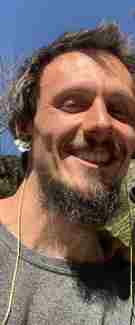

Technology & AI
Products, systems architecture and AI-assisted tools that make work more human.
BUILDBUILDER · CONNECTOR · SPACE HOLDER
I work between technology, regenerative land, medicine music and conscious development—creating useful tools, meaningful places and shared experiences with the people around me.
BUILDING IN ARGENTINA · COLLABORATING GLOBALLY
01 / THE THREAD THAT CONNECTS IT ALL
My work lives at the intersection of technology, living systems and human connection. Different approaches, one shared intention.

JASPER MEYERTHE PERSON BEHIND THE PROJECTS
I'm Jasper, a German living and creating in Argentina. My path moves between digital systems, regenerative land projects, medicine music and spaces for human connection.
I help shape AI-supported products and regenerative initiatives, make ceremonial drums, share medicine music, and hold sharing circles. My personal coaching focuses on reflecting on and integrating meaningful experiences—including entheogenic experiences—into everyday life.
These are different practices, but they share a question: how can we build systems and hold spaces that support connection, agency and care?
Products, systems architecture and AI-assisted tools that make work more human.
BUILDAgroforestry and practical regenerative initiatives rooted in place.
REGENERATEMedicine music, handcrafted drums, sharing circles and ceremonial space holding.
CONNECTPersonal coaching, consciousness inquiry and non-clinical entheogenic-experience integration.
INTEGRATEHOW THE WORLDS MEET
My work is not four separate careers. Each setting teaches me something about how to create with others.
Work on Mágico OS asks how useful systems can reduce friction while leaving relationships and local autonomy intact.
Explore the digital work ↗At the mountain garden, growing things calls for observation, patience and adaptation—not only a good plan.
Explore the land work ↗Medicine music, drum-making and sharing circles remind me to listen before trying to guide or build.
Explore living practices ↗03 / SELECTED INITIATIVES
Places, tools, and gatherings created with others—and the intention behind them.
Illustrative stock photography; project photos will be added as available.
02 / LIVING PORTFOLIO
A few glimpses into the projects, people and places shaping my days.
● THE LATEST WEEK
Loading this week's work…
Behind these stories are detailed project histories and evidence, available in the individual project pages.
04 / FROM ACTIVITY TO OUTCOMES
Some ideas become digital tools. Others become gardens, music, conversations, or communities. What matters is how they serve life and the people around them.
A living practice of curiosity, care and practical action.
05 / STORIES & REFLECTIONS
Thoughts and milestones from the places and projects I am part of.
Behind each story are operational reviews, delivery records and product roadmaps. These details help keep public narratives grounded without reducing meaningful work to activity counts.
06 / WAYS TO WORK TOGETHER
There are several ways to meet: as a client, collaborator, partner or participant. Choose what resonates, then tell me what you're exploring.
Product strategy, modular software, AI-assisted workflows and digital tools designed for real people and operations.
Discuss a product ↗Land stewardship, regenerative hospitality, community ventures and cross-cultural partnerships with shared purpose.
Explore a partnership ↗Medicine music, handcrafted ceremonial drums, sharing circles and intentionally held spaces for connection.
Explore a gathering ↗Personal coaching around consciousness, life transitions and entheogenic-experience integration.
Reflective, non-clinical support; no substances or medical treatment offered.Ask about a conversation ↗You don't need a finished proposal. A question, an idea or a shared curiosity is enough to begin.
07 / LET'S CREATE SOMETHING MEANINGFUL
Whether you're imagining a product, cultivating a place, organizing a gathering or seeking space to reflect, I'd love to hear your context.
Choose a direction above or simply say hello. Tell me what brings you here.